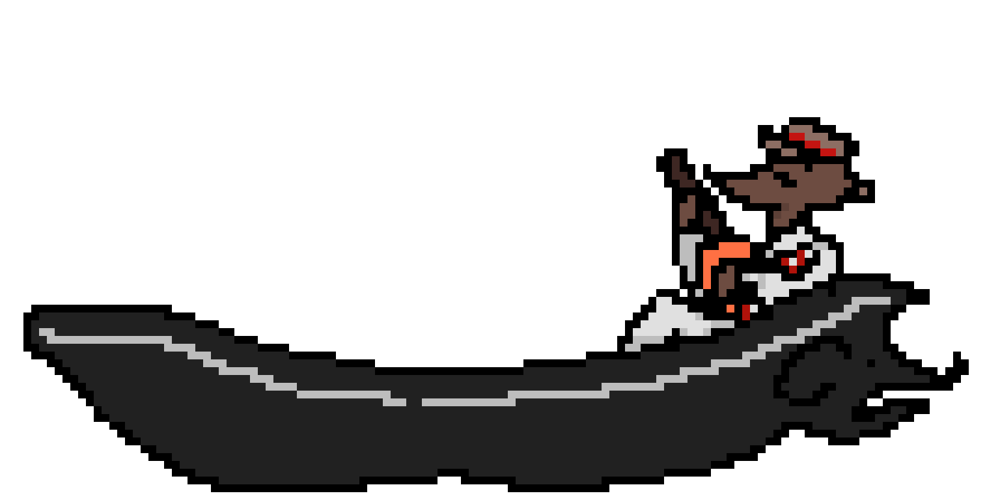

Let the Numbers Fall!!
Negative Numbers is an RPG inspired by Kindergarten, Undertale and Riddle School where you need to uncover a conspiracy lying (literally) right under your nose.
Play as a new student who accidently uncovers a strange underground faclitiy from a hole in the bathroom. Fight foes and meet strange fellas, and expose whats going on.

Negative Numbers is under current development! And will be finished... one day.
Check out our socials and (when we finish it) the blog on this website.